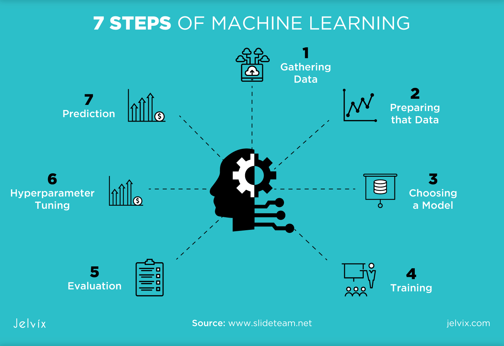

flowchart LR
A[Input x] --> B{Model Choice}
B -->|Linear| C[Train GLM]
B -->|Tree| D[Train RF]
B -->|Deep| E[Train NN]
C --> F[Evaluate]
D --> F
E --> F
F --> G{Meets Metric?}
G -->|Yes| H[Deploy]
G -->|No| B
simple_quarto_website
This is a Quarto website.
Welcome
Introduction
What is Convolutional Network? “A convolutional layer moves a small kernel across the image grid, taking element-wise products and sums to generate a feature (activation) map (Ajit, Acharya, and Samanta 2020).”
“Convolution applies a learnable kernel to local neighborhoods of the image, producing an activation map that encodes relevant features.” (Ajit, Acharya, and Samanta 2020).”
Key Concepts
Here are some key points in a bulleted list:
- Supervised learning uses labeled data \((x, y)\).
- Unsupervised learning discovers hidden patterns in unlabeled data.
- Optimization improves model parameters.
- Reinforce learning uses reward and penalties in agents to interact with environment.
“Our ultimate objective is to make programs that learn from their experience as effectively as humans do.” - John McCarthy
System Pipeline
Common models
- Linear regression
- Tree-based models
- Neural networks
Two-Column Section (H1)
Common Models
- Linear regression
- Tree-based models
- Neural networks
Workflow Stages (H3)
- Data preprocessing
- Feature engineering
- Model training
- Hyperparameter tunning1
- Evaluation

Algorithm Comparison Table
| Model | Strengths | Weakness |
|---|---|---|
| RandomForest | Scaling of data not required, unlikely to overfit | Requires more memory |
| XGBoost | Supports missing values and sparse features | More complex tuning needed |
| LightGBM | Small model size, faster in training | May perform poorly on small data |
Random Forest Equation
\[ \hat{y} = \frac{1}{T} \sum_{t=1}^{T} h_t(x) \]
the linear model is \(y = mx + \varepsilon\).
Reference
(Ajit, Acharya, and Samanta 2020)
To learn more about Quarto websites visit https://quarto.org/docs/websites.
References
Ajit, Arohan, Koustav Acharya, and Abhishek Samanta. 2020. “A Review of Convolutional Neural Networks.” In 2020 International Conference on Emerging Trends in Information Technology and Engineering (Ic-ETITE), 1–5. IEEE.
He, Kaiming, Xiangyu Zhang, Shaoqing Ren, and Jian Sun. 2016. “Deep Residual Learning for Image Recognition.” In Proceedings of the IEEE Conference on Computer Vision and Pattern Recognition, 770–78.
Footnotes
Hyperparameters are configuration values (like tree depth or learning rate) set before training, not learned from the data.↩︎